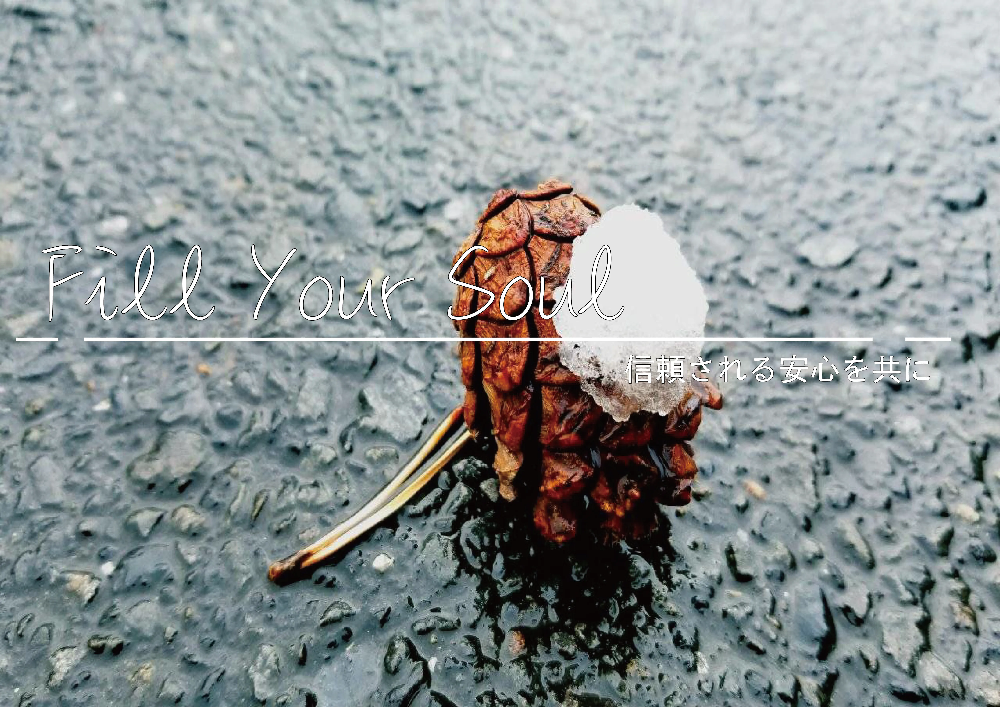
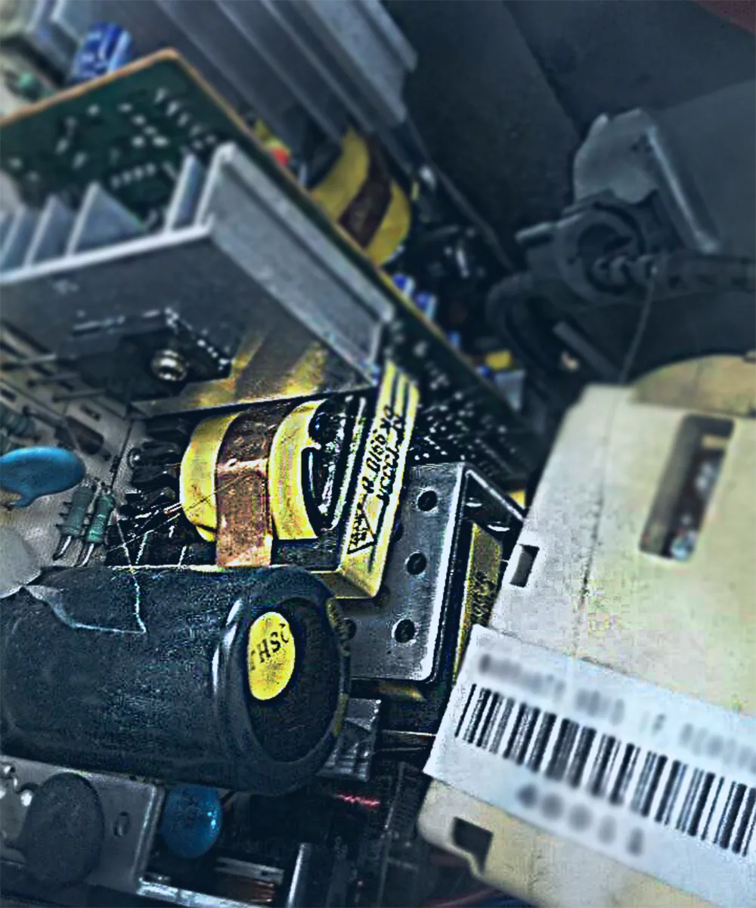
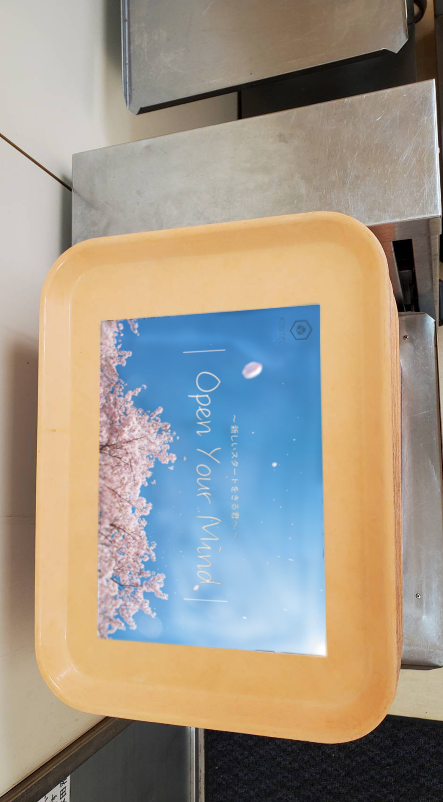

Poetry Gallery
技術には魂が宿ります．そして魂無き技術はその価値を減じます．
私たちは「魂の宿った技術で人々に幸せを提供する」という理念の下，全社員の総力でもって様々な仕事に取り組んでまいりました．
私たちの魂の宿った技術が，皆様一人ひとりの明るい未来を築いていく，その強い思いを持ってこれからも日々あらゆる事業に邁進していく所存です．
今後とも益々のご支援とご愛好を賜りますようお願い申し上げます．
技術に魂を宿すためには，日々のたゆまぬ努力が必要になります．日々是精進を心がけ，豊かな社会を目指しましょう．
魂の宿った技術を社会に提供するために，出来ることはなんでもやる姿勢を心がけて，より良い社会をめざしましょう．
一人ひとりの想いは小さい水滴のようなものでも
その価値を見失わず、
まだ見ぬミライのために想いを寄せ合い価値を高める
そんな関係でありたい。
私たちコンテックは、
一つ一つの技術に魂を込めて未来を築いていく、
そんなモノづくりのために邁進する技術者集団です。
Image Gallery